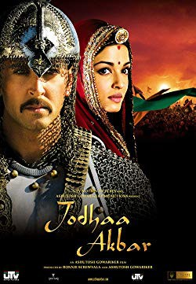

#9125 Jodhaa Akbar - Die Macht der Liebe
Alternativ: Jodhaa Akbar
 
 IMDB-Wertung: 7.6 / 10
IMDB-Wertung: 7.6 / 10  Metascore: 0
Metascore: 0 
Jodhaa Akbar is a sixteenth century love story about a marriage of alliance that gave birth to true love between a great Mughal Emperor, Akbar and a Rajput princess, Jodhaa. Politically, success knew no bounds for Emperor Akbar, After having secured the Hindu Kush, he furthered his realm by conquest until his empire extended from Afghanistan to the Bay of Bengal, and from the Himalayas to the Godhavari River. Through a shrewd blend of tolerance, generosity and force, Akbar won the allegiance of the Rajputs, the most belligerent Hindus. But little did Akbar know that when he married Jodhaa, a fiery Rajput princess, in order to further strengthen his relations with the Rajputs, he would in turn be embarking upon a new journey - the journey of true love. The daughter of King Bharmal of Amer, Jodhaa resented being reduced to a mere political pawn in this marriage of alliance, and Akbar's biggest challenge now did not merely lie in winning battles, but in winning the love of Jodhaa - a ...
Jahr: 2008
Dauer: 213 Minuten
FSK:
Land: Indien Studio: Bharat Entertainment InternationalTonspuren:
Untertitel: Deutsch,
Auflösung: 1080p (1920x816) Größe: 14028 MB
Genre: Action, Drama, Abenteuer, Liebe, Geschichte
Regisseur: Ashutosh Gowariker
Drehbuch: Haidar Ali
Soundtrack: A.R. Rahman
Darsteller:
- Hrithik Roshan als Jalaluddin Mohammad Akbar
- Aishwarya Rai Bachchan als Jodhaa Bai
- Sonu Sood als Sujamal
- Suhasini Mulay als Rani Padmavati
- Ila Arun als Maham Anga
- Raza Murad als Shamsuddin Atka Khan
- Kulbhushan Kharbanda als Raja Veer Bharmal
- Surendra Pal als Rana Uday Singh
- Rajesh Vivek als Chughtai Khan
- Manava Naik als Neelakshi
- Disha Vakani als Madhavi
- Nikitin Dheer als Sharifuddin Hussain
- Indrajit Sarkar als Birbal
 Amitabh Bachchan als Narrator
Amitabh Bachchan als Narrator- Chetana Das als
- Poonam Sinha als Mallika Hamida Banu
- Pramod Moutho als Todar Mal
- Vishwa Mohan Badola als Saadir Adaasi
- Dilnaz Irani als Salima
- Yuri Suri als Bairam Khan
- Shaji Chaudhary als Adham Khan
- Sayed Badrul Hasan als Mullah Do Pyaaza
- Pramatesh Mehta als Chandrabhan Singh
- Pradeep Sharma als Sheikh Mubarak
- Digvijay Purohit als Rajkumar Bhagwan Das
- Amin Hajee als Singer
- Aman Dhaliwal als Rajkumar Rattan Singh
- Tejpal Singh Rawat als Ni'mat
- Abeer Abrar als Bakshi Banu
- Shehzor Ali als Raja Hemu
- Balraj als Raja Balraj Singh
- Ulhas Barve als Raja Mankeshwar
- Chan als Assasin
- Prayas Choudhary als Singer in khwaja song
- Parth Dave als Young Jalaluddin Mohammad Akbar
- Farida als Poison Maid
- Karim Hajee als Singer
- Sudhanshu Hakku als Raja Shimalgarh
- Azad Kavi als Shopkeeper
- Bharat Kumar als Raja Chauhan
- Raju Pandit als Raja Bhaati
- Omar Khayyam Saharanpuri als Qazi
- Rajiv Sehgal als Raja Viraat
- Gurmeet Singh als Raja Shundi
- Gurmmeet Singh als Raja Shundi
- Jassi Singh als Raja Bhadra
- Ranbir Singh als Court Announcer
- Rucha Vaidya als Young Jodhaa
- Bheem Vakani als Mir Bakawal
Datei: X:\2008(G-M)\Jodhaa Akbar - Die Macht der Liebe (2008, FSK, 1920x816).mkv seit 19.07.2018
Festplatte: HD 2008(G-Z)-2009(A-F)
 Es gibt insgesamt 73 Filme in der Gruppe '2008(G-M)'
Es gibt insgesamt 73 Filme in der Gruppe '2008(G-M)'